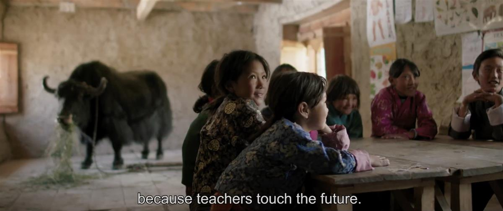

ON SOURCE: BFI SIGHT AND SOUND
ON Ed: saw this wonderful film, Lunana: A Yak in the Classroom recently. Here is a sweet little quote from the film “because teachers touch the future.”
Lunana: A Yak in the Classroom: gentle Bhutanese drama
This charming, quietly funny culture-clash film, about a young teacher in Bhutan who is posted to a remote mountain village, is a thoughtful exploration of happiness and community values.
15 March 2023
By Leigh Singer
Despite years of training, twentysomething Ugyen (Sherab Dorji) lacks motivation to become a teacher. His real dream is to get an Australian visa and pursue his singer-songwriter dreams beyond Bhutan, the small Himalayan kingdom he calls home. But if Ugyen feels constrained by life in the nation’s capital, Thimphu, his world shrinks even further when he’s summarily posted to a school in the remote village of Lunana, population 56, altitude 4,800 metres, an arduous week-long trek away.
In Lunana, there’s no mobile phone reception and precious little electricity; the schoolroom doesn’t even have a blackboard. What the locals do have is a determination, as headman Asha (Kunzang Wangdi) puts it, for their children “to become more than yak herders and cordyceps gatherers”. So Ugyen is heralded like a visiting dignitary. In the words of his wide-eyed young students (played by real, adorable Lunana kids), a teacher can help them “touch the future”.
So begins a charming, easygoing, gently humorous fish-out-of-water tale, culturally specific but universal enough to become Bhutan’s first-ever Oscar contender (it was nominated for Best International Feature Film last year). When we first encounter Ugyen, his t-shirt sports the country’s ‘Gross National Happiness’ slogan, a philosophy officially introduced 50 years ago by Bhutan’s then-king to emphasise the prioritising of his subjects’ personal fulfilment over commercial or industrial commitments. And the question of what one genuinely needs, or what circumstances elicit true contentment, is one writer-director Pawo Choyning Dorji delicately probes throughout.
Contrasts abound between the modern and the traditional. At first, Ugyen burns paper to heat his primitive living quarters, only to find it’s a rare resource in a school with almost none. Once his headphone batteries – and his dreams of pop stardom – power down, he’s better able to hear, even learn, the plaintive folk song of herder Saldon (Kelden Lhamo Gurung), which honours the yaks that provide the community with meat, milk and, yes, fuel through their dried dung. When Saldon gifts Ugyen a yak in his new workplace, it seems a symbol that embodies the village’s holistic worldview.
Dorji’s unadorned, contemplative compositions and measured editing rhythms reflect an unhurried appreciation of the natural landscapes and Lunana’s acceptance of its place in an ever-changing world. The inevitable, movingly understated climax doesn’t judge Ugyen; yet the very first shot, long before Ugyen reaches Lunana, is of Saldon singing in the mountains. That’s where the film’s heart truly lies. If teachers, or anyone, can “touch the future”, Dorji quietly insists that we hold on to the past too.
► Lunana: A Yak in the Classroom
Open on original site ↗
ON SOURCE: BFI SIGHT AND SOUND